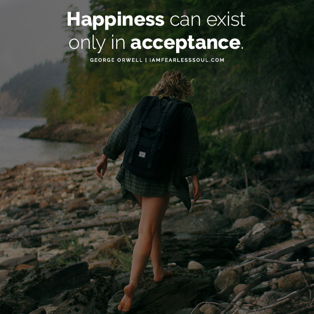

-

 HAZEL SAN LOVEREZ - PATILANO
hazelsanpatilano@gmail.com
HAZEL SAN LOVEREZ - PATILANO
hazelsanpatilano@gmail.com
- faceProfile
- CollectionsQuotes
- Additonal Information
- Web Development Level III
Happiness can exist only in Acceptance
The truth is that one of the bravest things we can do is to remain open hearted and vulnerable. When we shut down our hearts, we shut down to life.
It is a strange tendency of this multi layered journey that often when we hit times of challenge, we want to contract our hearts and attempt control the way things are happening. The discomfort of uncertainty can make us panic so much that instead of opening up when we most need to most, we shut down. Maybe we do this because we fear the challenges we face. Or perhaps at some point in life when we felt vulnerable we were taught to 'harden up' or 'be brave'.